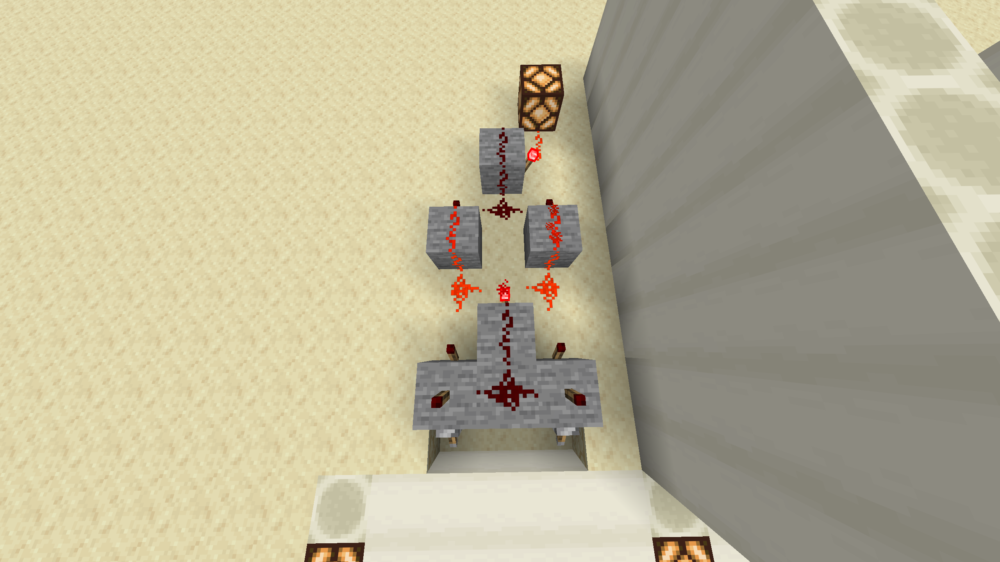

XNOR gate

Nullam rutrum elementum nisi interdum finibus. Praesent sodales massa magna, in rhoncus tortor sagittis luctus. Nam imperdiet dignissim augue ac dignissim. Praesent est massa, egestas et dolor sed, aliquet ultricies elit. Vestibulum malesuada, sapien sed dapibus ultricies, dui velit ullamcorper nunc, eu malesuada nunc lectus et neque. Aliquam aliquam facilisis lorem sed porttitor. Quisque tincidunt dolor et orci ornare, vitae tincidunt nisi rhoncus. Aenean euismod quam eu ligula malesuada ultricies. Nullam sem sapien, commodo in ante eu, vestibulum posuere odio. Integer ultricies, dui vitae maximus elementum, massa massa bibendum nibh, at mollis libero dolor ac massa. Maecenas libero lacus, tristique vel elit sit amet, pretium tempor ex. Pellentesque lorem risus, lacinia nec sapien nec, semper dapibus tortor.
History
Nunc finibus risus id eleifend fermentum. Morbi ornare lectus a ante euismod, bibendum pharetra lorem auctor. In id nulla augue. Nullam in nulla at leo placerat pharetra maximus eget orci. Vestibulum pretium sodales felis vel viverra. Pellentesque odio diam, posuere ac diam ut, ullamcorper elementum velit. Curabitur vel ultrices nibh. Mauris non posuere massa, ac congue justo. Sed quis facilisis augue. Nam gravida sagittis elit. Phasellus dapibus ipsum quis tristique posuere. Pellentesque sodales justo vel metus tempus, id fermentum mauris vulputate. Aenean varius nibh ac aliquet tempus. Proin id orci et libero posuere facilisis. Integer hendrerit felis id venenatis sagittis. Nunc ac porta justo, eu maximus mi. Nunc vel nibh vitae nulla volutpat dignissim. Aenean in placerat risus, vitae accumsan elit. Morbi arcu augue, faucibus nec velit ut, auctor feugiat risus. Ut elementum nunc condimentum placerat ultricies. Pellentesque et auctor ex. Suspendisse vitae congue leo. Nunc tortor libero, varius in risus ac, ullamcorper consequat ligula.
| Input | Output | ||
|---|---|---|---|
| A | B | ||
| 0 | 0 | 1 | |
| 1 | 0 | 0 | |
| 0 | 1 | 0 | |
| 1 | 1 | 1 | |